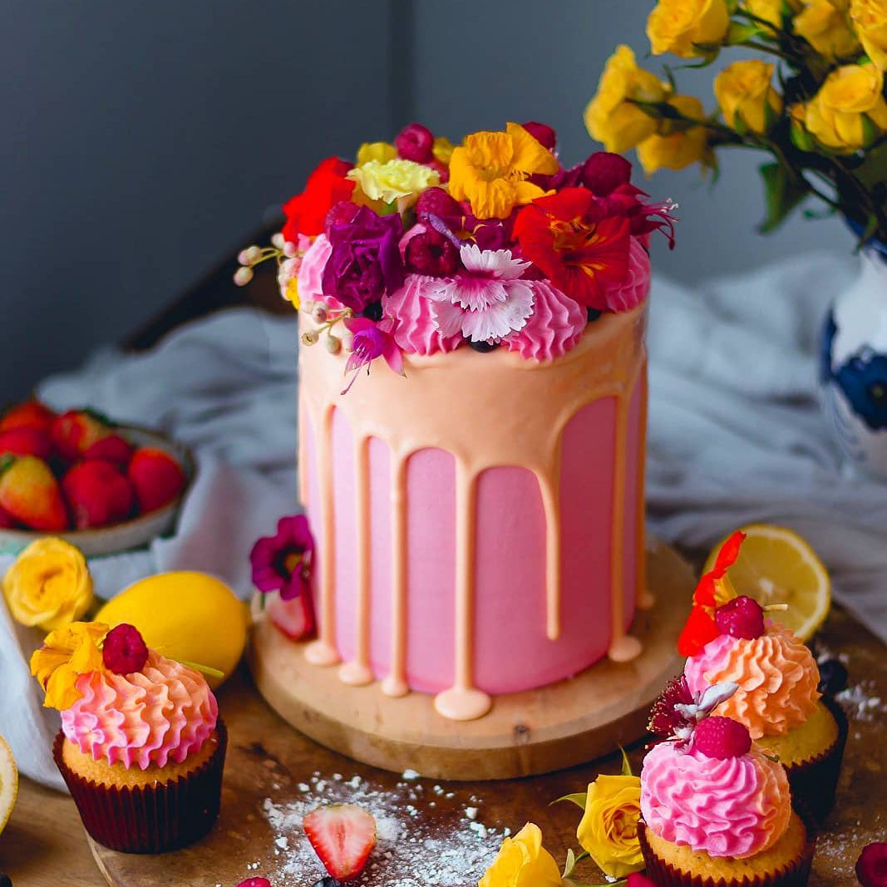
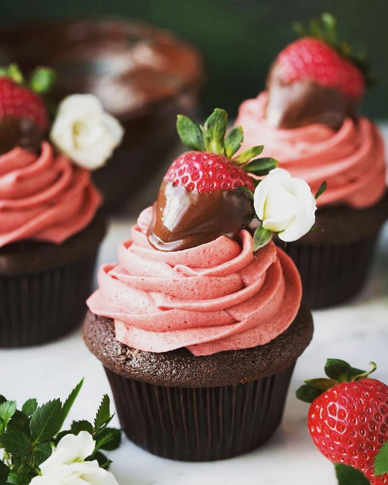
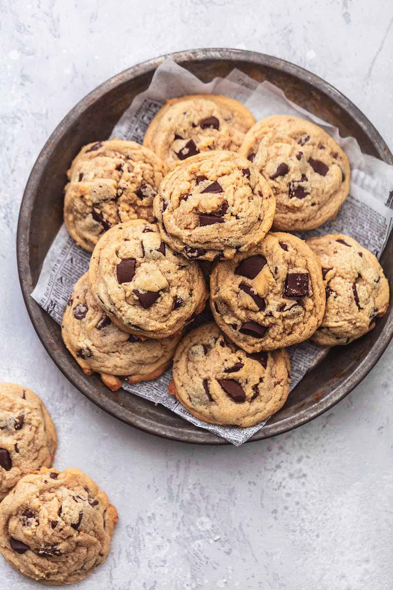
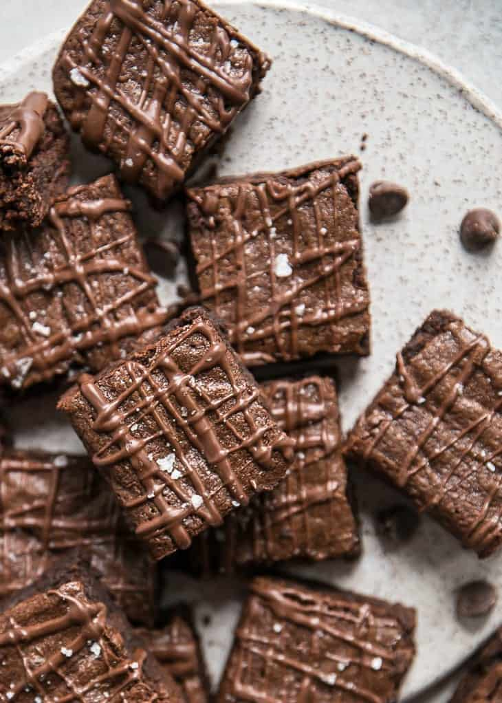

Hi! Welcome to My Baking Page, here I will be presnting some information about baking and why I like it a lot.
I love baking different dessert because it's fun learning how to make different foods. I think this because everytime you make a dessert or food, it's like an expiriment you test out so you can get the perfect result. There would be a lot of trial and errors but that's what make it very fun to do. I also love that when baking cakes, cupcakes, and other decorative desserts you can make it look like however you please and be creative with it. My favourite part of baking is probably working on the presentation of it and making it look visually pleasing with different types of icing, and frosting.
I specifically love to bake cupcakes, cookies, brownies and cakes, because they are simple to make and fun to decorate. I'm not an expert on baking but I like to do it now and thenm with my family to try new things when I'm bored.
   I have given a brief decription about baking and some of my favourtie desserts. One of my favourite people to watch on youtube about baking is Rosanna Pansino. She is a baker and she makes a bunch of different kinds of treats on her channel. One of my favourite videos are the galaxy cupcakes, I've provided the ingreidiants and link to the video below if you would want to try and make them yourself.